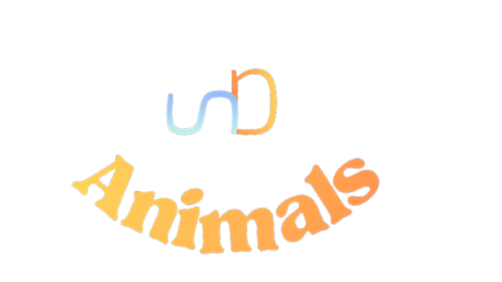

Vai ser um aplicativo usada para verficar possíveis problemas
Que seu animal pode ter ao decorrer da sua idade e raça
Sem contar que vai ter especifcações bem legais sobre o seu tipo de pet
© 2026 Guilherme